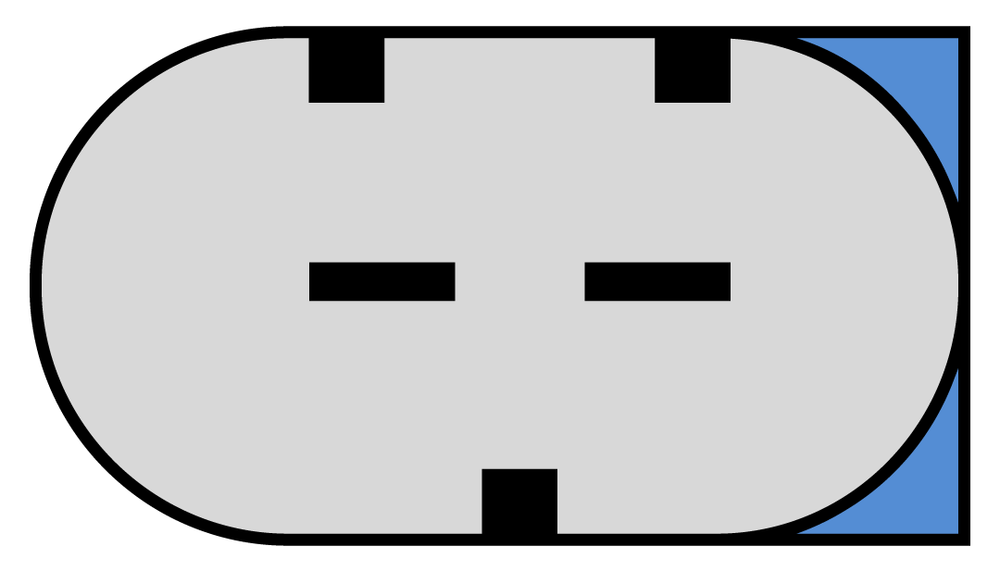
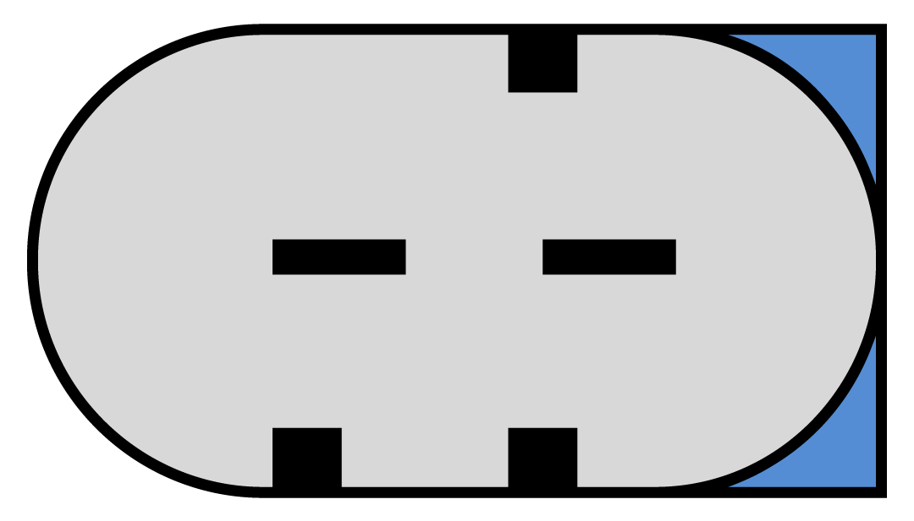
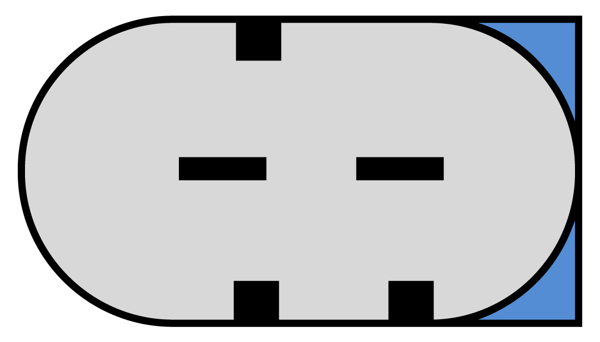

Всеобъемлющий и надежныйТехническая информация
По всем техническим вопросам, касающимся устройств Motoplat, обращайтесь к производителю. Для этого заполните соответствующую форму.
рус
nederlands
english
deutsch
français
español
português
中文
русский
Подключение LIN
подробнее
Недавно мы разработали новые протоколы LIN, специально реорганизованные для использования в нескольких тестерах Motoplat. Сигнал LIN регуляторов LIN_1 — LIN_21 будет отображаться вместе с его идентификационным кодом. Если на рынке появятся новые протоколы LIN, то при необходимости мы увеличим количество протоколов. Благодаря этому мы сделаем работы по восстановлению более простыми, экономичными и понятными. Нет необходимости в установке отдельного регулятора для каждого генератора переменного тока: достаточно просто объединить регуляторы в группы или присвоить им идентификационные коды. Таким образом, если вам известно, что на Mercedes и VW используются регуляторы LIN-2, то достаточно выбрать более дешевое устройство. Это позволит сэкономить деньги и место, необходимое для хранения.
Протоколы LIN-1 и LIN-2 используются на моделях 2002–2011 гг. Регуляторы LIN-1 и LIN-2 с различными идентификационными кодами не взаимозаменяемы. Регулятор LIN-1 можно заменить только регулятором LIN-1, то же справедливо и для регуляторов LIN-2. Все прочие регуляторы, отличные от LIN-2, имеют другое устройство и значение скорости передачи данных в бодах, поэтому они тоже не являются взаимозаменяемыми. Код, отображающийся на экране, — идентификационный код регулятора. Он направляется в электронный блок управления, который необходимо идентифицировать. Эти устройства «говорят на одном языке», если так можно выразиться.
Протокол (идентификатор) используется, например, в генераторах переменного тока BMW LIN-Infineon или новых моделях Valeo CG. Если в ходе испытаний генератора переменного тока, отличного от генератора Honda, на экране отображается протокол LIN-4 (Honda), то это означает, что испытываемый генератор использует тот же протокол. Генераторы переменного тока BOSCH и VALEO, использующие один и тот же протокол LIN, не являются взаимозаменяемыми, поскольку они имеют разные адреса (идентификаторы) и в случае их несовпадения не будут правильно работать в автомобиле.
Загрузите следующий файл Excel, чтобы получить обзор различных протоколов и производителей автомобилей.
Имейте в виду, что компания Motoplat берет на себя ответственность за реорганизацию протоколов LIN. 19 из указанных выше протоколов LIN не существуют для официальных мировых поставщиков оригинального оборудования, которые используют лишь протоколы LIN-1 и LIN-2.
Упомянутые выше автопроизводители указаны лишь для примера.
Подключение BSS
подробнее
Аббревиатура BSS расшифровывается как Bit Synchronous Single Wire, что значит «бит-синхронный однопроводной сетевой протокол». Существует 3 различных сигнала BSS. Они отличаются возможностью сообщать о различных неисправностях генератора переменного тока:
BSS-1 = сообщает только о механических или электрических неисправностях;
BSS-2 = сообщает только о механических или электрических неисправностях;
BSS-3 = сообщает и о механических, и об электрических неисправностях.
Регуляторы BSS-1 и BSS-2 не являются взаимозаменяемыми, поскольку электронный блок управления автомобиля может запросить информацию об определенной ошибке. Если он не получит правильный ответ, то на приборной панели будет отображаться ошибка генератора переменного тока (включится индикатор зарядки). Регулятор BSS-3 можно использовать и вместо BSS-1, и вместо BSS-2, поскольку он универсален (BSS-3 может предоставлять информацию об обоих типах ошибок). В устройствах марки BOSCH используются только регуляторы напряжения BSS-3, поэтому вам не придется заменять их на регуляторы другой модели. Особую осторожность следует проявлять при использовании регуляторов VALEO, поскольку они бывают 3 видов: BSS-1, BSS-2 и BSS-3. По собственному опыту мы знаем, что в настоящее время невозможно приобрести новые регуляторы VALEO BSS-3.
Например, в автомобилях BMW E60 2003 года и более поздних моделях устанавливался генератор переменного тока Valeo TG17C010 с системой BSS-2. В более поздних моделях используется такой же генератор переменного тока модели TG17C048 с регулятором BSS-3. Если вы закажете регулятор напряжения Valeo для данного генератора переменного тока, то вы получите регулятор BSS-2. Если вы приобретете новый генератор переменного тока TG17C048, то на нем будет установлен регулятор BSS-3.
Мы проверили сигнал, идущий от электронного блока управления автомобиля BMW E60, на котором установлен оригинальный генератор переменного тока TG17C048 (BSS-3). На этом автомобиле был установлен регулятор BSS-2. Возможно, BMW готовится к обновлению протокола до версии BSS-3, но в настоящее время автомобили BMW просто оборудуются генераторами переменного тока с регуляторами BSS-3. Вероятнее всего, протокол BSS больше не будет использоваться. Вместо него в будущем будет использоваться новый протокол LIN-INFINEON.
Аналогичная ситуация и с генераторами переменного тока BMW TG17C034 и VW TG17C020: новые автомобили оборудуются регуляторами BSS-3, а на старых установлены регуляторы BSS-2. Оба типа регуляторов работают исправно. В такой ситуации мы бы посоветовали заказать один из регуляторов напряжения Valeo и убедиться, что это действительно регулятор BSS-1, BSS-2 или BSS-3. В этом случае вы сможете с уверенностью определить тип регулятора и установить на генераторе переменного тока необходимый регулятор BSS. Таким образом, вам не потребуется много разных регуляторов для каждого отдельного генератора переменного тока BSS.
Подключение VW
подробнее
Мы изучили возможность подключения генератора переменного тока, проверив положение ползунков внутри него, которые также называются «разъемами VW».
Такая возможность существует. Как вы видите, в изображенном ниже разъеме COM нижний ползунок находится прямо напротив свободного места между двумя другими ползунками наверху. В таком случае можно со 100 % уверенностью сказать, что перед нами разъем COM. Не важно, используется ли в нем 1- или 2-штыревой соединитель.
Рисунках 1
На рисунках 2 и 3 ниже вы видите, что ползунки находятся в другом положении, отличном от положения для разъема COM, изображенного выше. На рисунке 2 изображены два ползунка, установленные внизу. Правый ползунок находится напротив верхнего ползунка. На рисунке 3 ползунки находятся в зеркальном положении по отношению к ползункам разъема, изображенного на рисунке 2.
Рисунках 2
Рисунках 3
С-подключение
подробнее
С-подключение используется в генераторах переменного тока автомобилей таких марок, как Toyota и Honda. В большинстве случаев такое подключение можно распознать по вилке квадратной или овальной формы.
Используются следующие обозначения подключений:
L = лампа
IG = зажигание
C = компьютер
FR = обратная связь
Выполнение испытаний С-подключения может показаться сложным, но только не в этом случае. Просто подключите С-клемму к «массе» — вы заметите, что значение VSP снизится до 12,8 В. Например, во время разгона автомобиля данная клемма подключена к «массе» посредством электронного блока управления, при этом генератор переменного тока временно отключен. Такой способ подключения позволяет сэкономить топливо.
Подключение COM
подробнее
Cовременные генераторы переменного тока оснащены подключением COM. Далее приведена более подробная информация об этих подключениях и соответствующих протоколах.
Что означает COM? Аббревиатура COM означает «Связь» или «Компьютер». Подключение COM представляет собой цифровой сигнал связи, измеряемый в байтах.
Функции:
Данные подключения были разработаны в целях экономии топлива.
Эти подключения используют цифровые сигналы, причем одно из них работает быстрее, чем другое.
Чем быстрее генератор переменного тока реагирует на команды бортового компьютера, тем более экономично используется топливо.
Скорость обмена данными называется скоростью передачи данных в бодах.
Подключение COM
BSS-1
BSS-2
BSS-3
LIN-1
LIN-2
LIN-3
LIN-4
LIN-5
LIN-6
LIN-7
LIN-8
LIN-9
LIN-10
LIN-11
LIN-12
LIN-13
LIN-14
LIN-15
LIN-16
LIN-17
LIN-18
LIN-19
LIN-20
Скорость передачи данных по последовательному каналу — количество битов информации, переданных по каналу последовательной связи за одну секунду. Измерение скорости передачи данных модема. Зачастую это значение путают с битами в секунду (количество битов, переданных за одну секунду), однако скорость передачи данных в бодах представляет собой количество событий или изменений сигнала, произошедших за одну секунду. Событие, произошедшее в цифровом высокоскоростном канале передачи данных, может быть закодировано в нескольких битах, поэтому скорость передачи данных в бодах не всегда будет равна скорости в битах в секунду. Последняя будет является более точным значением и применяется для измерения скорости передачи данных модемов. Например, модем 9600 бит/с, который кодирует одно событие в 4 битах, на самом деле, работает со скоростью 2400 бодов, но передает данные со скоростью 9600 бит/с (2400 событий умножить на 4 бита для каждого события) и называется модемом 9600 бит/с.
Подключение dfm
подробнее
DF(M) означает Digital Field Monitor — цифровой монитор поля. У каждой марки генератора переменного тока используется собственное сокращение для подключения DF(M), например: FR (Field Return — полевой возврат), DF (Digital Field — цифровое поле), DFM (см. выше), M (Monitor — монитор), LI (Load Indicator — индикатор нагрузки). Но все они функционируют одинаково.
Их функции заключаются в следующем. На подключении DFM делаются положительный и отрицательный замеры, и оба работают с прямоугольным импульсом. Когда нагрузка на генератор возрастает, прямоугольный импульс становится шире или уже, в зависимости от использования автомобиля. Это измеряется в % и также называется ШИМ (широтно-импульсная модуляция). Так на ЭБУ подается информация о том, какова нагрузка в конкретный момент во время зарядки. Если нагрузка слишком высока, ЭБУ может отключить некоторые из принадлежностей автомобиля или увеличить скорость холостого хода.
DFM (M, FR, DF, LI, F) — прямоугольный сигнал (информация), передаваемый от генератора переменного тока автомобильному ЭБУ. Он показывает уровень нагрузки на валу генератора, также известной как электромагнитная сила. Она оказывает непосредственное влияние на энергию, производимую генератором.
Напряжение регулируется настройкой тока ротора генератора по частоте, например 150 Гц, меняющей электромагнитную силу. Чем больше продолжительность импульса тока, тем шире рабочий цикл.
Подключение PCM
подробнее
PCM (блок управления силовой передачей) используется на европейских автомобилях Ford и Landrover. Этот сигнал действует так же, как и сигнал DFM, но электронный блок управления автомобиля направляет сигнал на регулятор для изменения уставки напряжения (VSP), которая также зависит от состояния батареи (AS) и нагрузки (LI) в конкретный момент.
Чем реже подается импульс, тем выше значение уставки напряжения, и наоборот. Чтобы уставка напряжения была равна 14,2 В, данный сигнал должен иметь следующие стандартные настройки: 5 В, 125 Гц и 55 % ШИМ.
Подключение RLO
подробнее
Клемма RLO используется в автомобилях Toyota, например 104210-4521.
Клемма RLO подключена к электронному блоку управления автомобиля, который, в свою очередь, подключен к датчику, расположенному на аккумуляторной батарее или рядом с ней. Этот датчик постоянно проверяет состояние аккумуляторной батареи, а в его сигнале есть импульс блокировки с очень низкой частотой (7,5 Гц). Кроме того, в зависимости от ШИМ, этот сигнал может изменять значение уставки напряжения. Чем реже подается импульс блокировки, тем выше значение уставки напряжения.
Considering construction solutions, these Valeo alternators can be divided into two different groups. (English only)
The production and distribution of electric energy on the board of a modern car already require...(English only)
One of the ways to reduce the fuel consumption of a vehicle is to turn off the engine...(English only)